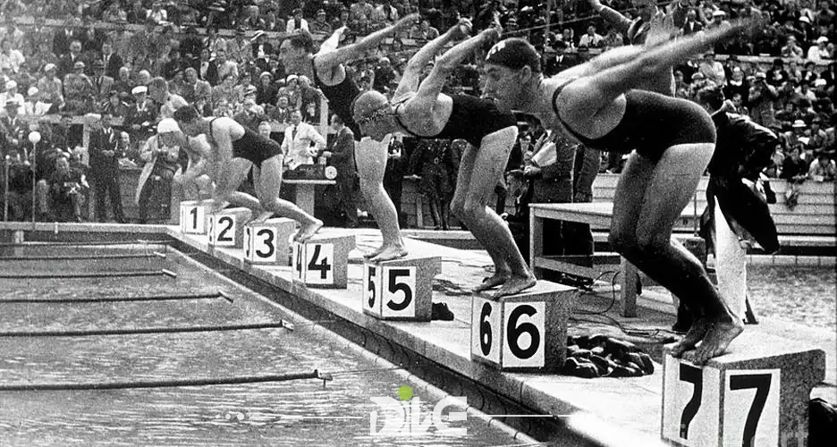

Swimming started its sporting journey in the mid-19th century, when the
world's first swimming organisation was formed in London in 1837.
Inevitably, things soon became competitive and, in 1846, the first
swimming championship was held in Australia. The race became an annual
event, and it was an early indicator for the future success of
competitive swimming. Swimming has been part of the Olympic schedule
since the very first modern Olympic Games in 1896. It's one of only four
disciplines to have been retained, appearing in every summer Olympics
since - the others being athletics, artistic gymnastics and fencing.The following events were contested (all pool events are long course, and distances are in meters unless stated)
In the early years, Olympic swimming events were male-only. Women's
events were introduced at the 1912 Games in Stockholm - although women
initially only competed in two events, the 100m freestyle and 4×100m
freestyle relay. Experimental beginnings brought some rather unique
events to those early Games. At the inaugural modern Olympics in Athens,
swimming events included the
100m freestyle for sailors, which only members of the
Greek navy could compete in. Until the London 1908 Games, Olympic
swimming events took place in open water. This left the swimmers at the
mercy of the elements, contending with the weather and waves.
After being exposed to temperatures of 13°C in the Mediterranean (a
modern Olympic pool is around 25-28°C) during the 1,200m freestyle race
- in which he won gold - Alfréd Hajós said: “My will to live completely
overcame my desire to win”, illustrating the precarious nature of the
early swimming events. Showing just how varied the Games have been
throughout history, Hajós would later compete at the 1924 Paris Olympics
in the art competition, when he and fellow countryman Dezső Lauber won
silver in the sporting architecture category.

The first photo of Olympic swimming
🏆1st to 3rd place in men's 1500m freestyle swimming